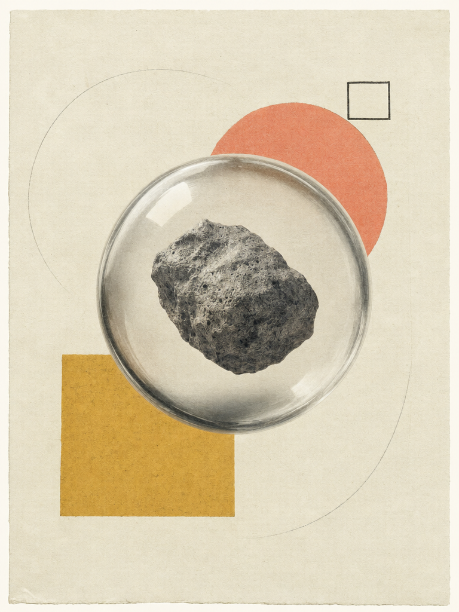

Designing intelligence with skills, taste, and code.
The open-source alternative to Anthropic’s Claude Design. 12 coding agents — Claude, Codex, Cursor, Gemini and friends — drive 31 composable skills and 72 brand-grade design systems. Generate web pages, slide decks, mobile prototypes, images, even short videos — all running on your own laptop.

We treat your agent as a creative collaborator, not a black box.
The strongest coding agents already live on your laptop. We don't ship one — we wire them into a skill-driven design workflow that runs locally with pnpm tools-dev, deploys the web layer to Vercel, and stays BYOK at every layer.

to visual taste, we
prototype the full
stack of creative
systems.

Skills, systems, and surfaces for creative intelligence.
We blend human taste with whichever agent you already trust to ship interfaces, decks, and editorial pages that feel intentional, expressive, and alive.
Skills,
not plugins
31 file-based SKILL.md bundles. Drop a folder in, restart the daemon, it appears.
Design Systems
as Markdown
72 portable DESIGN.md systems — Linear, Vercel, Stripe, Apple, Cursor, Figma…
A living archive of experiments in skills, decks, and machine-made form.

Magazine Decks
Editorial-grade slide decks with guizang-ppt. Magazine layout, WebGL hero.

Synthetic Matter
Gpt-image-2 + Seedance + HyperFrames. Image, video, audio — same chat surface as code.

Prompt Choreography
When unresolved choices would materially change the result, a focused question form keeps the next iteration on track.


From signals to systems.
Every stage is iterative, visual, and research-driven — composable files, not opaque prompts.
Detect →
The daemon scans your $PATH for 12 coding agents and auto-loads 31 skills + 72 systems on boot.

Discover →
Clarify only when it matters — focused questions for unresolved surface, audience, tone, scale, or brand context.

Direct →
Pick one of 5 deterministic visual directions. Palette in OKLch, font stack, layout posture cues.

Deliver
The agent writes to disk, you preview in a sandboxed iframe, export HTML / PDF / PPTX / ZIP / Markdown.

guizang-ppt
Magazine-style web PPT for product launches and pitch decks. Bundled verbatim, original LICENSE preserved.

kami
An editorial paper system. Warm parchment canvas, ink-blue accent, serif-led hierarchy — multilingual by design (EN · zh-CN · ja).

“Open Design helped us turn vague AI ideas into a visual system that felt sharp, believable, and genuinely new.”
Standing on the shoulders of teams shipping open-source design culture.

The world’s top Agents and LLMs, powering Open Design
Top up once and reach GPT, Claude, Gemini, DeepSeek and more. AMR auto-routes each step to the right frontier model — billed by real token usage, with your wallet balance and request log in one console.
- 20+ flagship models
- Zero setup
- SOTA Harness For Design
- Real token-based billing
- …
Let's build something open and visually unforgettable.
Star us on GitHub, drop into the issues, or run pnpm tools-dev tonight. Three commands and the loop is yours.